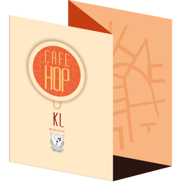

Get a Physical Map
It's Free!
Our physical map lists all of our partner cafes based on their locations. It also contains useful information on cafe hours, food served, and contact details -- perfect for a cafe hopping trip!
Get your free copy of the physical CafeHop KL map from any of our partner cafes: